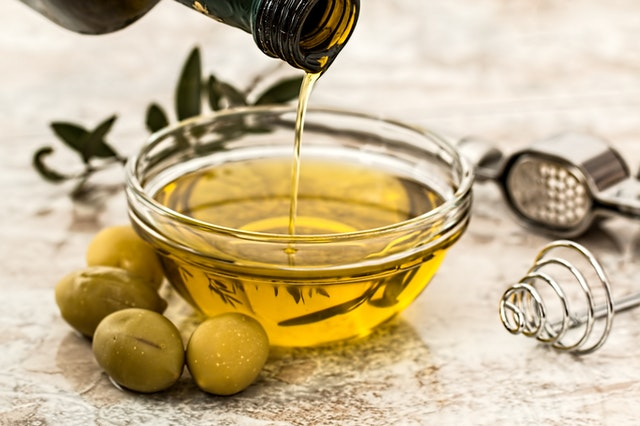

8 de noviembre de 2020 por Fabián
Espinoza
El agua, como supongo que ya sabrás, es imprescindible para la vida, y más concretamente para nosotros,
los seres humanos.Beber la cantidad de agua necesaria cada día es muy importante por diferentes motivos para nuestra salud, los

8 de noviembre de 2020 por Fabián
Espinoza
El pescado es uno de los alimentos que menos incorporamos en nuestra dieta, principalmente porque no nos
gusta su sabor o porque hay que comerlo en el día si queremos pescado fresco de buena calidad. Sin embargo

8 de noviembre de 2020 por Fabián
Espinoza
Uno de los mayores problemas que nos encontramos a la hora de adelgazar es que llegamos a la
hora
de cenar con mucha ansia de comer debido a la escasez de alimentos que tomamos durante el
día,
lo cual nos impulsa a darnos auténticos homenajes en las cenas, sobre todo si no tenemos
mucha fuerza de voluntad.